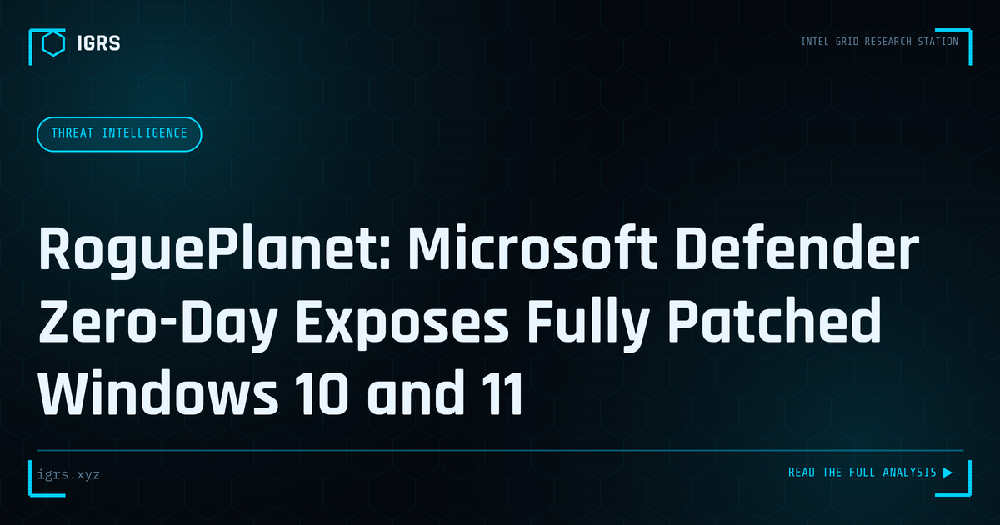

RoguePlanet: Microsoft Defender Zero-Day Exposes Fully Patched Windows 10 and 11
| File No. | IGRS-064/2026 |
| Subject | Technical analysis of the RoguePlanet zero-day exploit and defensive guidance for Windows environments |
| Category | Threat Intelligence |
| Author | Manuj Kumar Pandey |
| Published | 2026-06-12 |
| Reading time | 12 minutes |
A new Microsoft Defender zero-day named RoguePlanet was publicly released hours after June 2026 Patch Tuesday, granting SYSTEM-level privileges on fully patched Windows 10 and 11 machines. Here is what it does and what defenders should do now.
Windows Security Zero-Day: Defender's Brief
Zero-day vulnerabilities — flaws exploited before a patch exists — represent the most challenging class of threat, particularly when they affect security software or core operating system components. A zero-day involving Windows security components is especially serious, given the platform's dominance across Indian enterprises and government. This brief examines such threats from a defender's perspective and outlines response priorities.
What Makes Zero-Days Dangerous
Zero-day vulnerabilities are dangerous because no patch exists when exploitation begins — defenders have no fix to apply and may not even know the vulnerability exists. Attackers exploiting a zero-day face no signature-based detection for the specific flaw and can operate before defences are updated. When a zero-day affects security software itself, the danger is compounded: the very tool meant to protect the system becomes the avenue of compromise, potentially disabling defences.
Response Priorities Without a Patch
| Measure | Purpose |
|---|---|
| Vendor mitigations | Apply interim workarounds |
| Behavioural detection | Catch exploitation activity |
| Network monitoring | Detect anomalous behaviour |
| Threat hunting | Search for compromise indicators |
Detecting Exploitation
Without a patch, detection relies on identifying the exploitation behaviour rather than the specific vulnerability. Behavioural detection looks for the actions attackers take after exploiting — unusual processes, privilege escalation, persistence mechanisms, and lateral movement. Even when the initial exploit is novel, the attacker's subsequent activity often follows recognisable patterns. Monitoring for these behaviours, and hunting proactively for indicators, can catch exploitation that signature-based detection misses.
Applying Mitigations
When a vendor discloses a zero-day, they often provide interim mitigations before a full patch — configuration changes, workarounds, or detection rules that reduce risk. Applying these promptly is the priority while awaiting the patch. Organisations should monitor vendor and CERT-In advisories closely during an active zero-day, implement recommended mitigations quickly, and apply the patch immediately once available, as exploitation typically intensifies after public disclosure.
Threat Hunting for Compromise
Because a zero-day may have been exploited before disclosure, organisations should hunt for signs that they were already compromised. This involves searching logs and systems for indicators of compromise, examining for unusual activity around the time the vulnerability was active, and investigating any anomalies. Proactive threat hunting can reveal a compromise that occurred before defences were updated, enabling response before attackers achieve their objectives.
Investigation and Compliance
If compromise is confirmed, investigation establishes the scope and impact, with evidence handled under Section 63 BSA. Where personal data is affected, the DPDP Act 2026 notification obligations apply. The investigation must determine what attackers accessed and whether data was exfiltrated, informing both remediation and the organisation's legal and regulatory response. Proper, defensible investigation is essential given the potential severity of a security-component zero-day.
Building Zero-Day Resilience
For Indian organisations, zero-day threats — particularly those affecting Windows and security components — reinforce the value of defence in depth. Since no single control stops a novel exploit, layered defences, behavioural detection, proactive threat hunting, rapid mitigation deployment, and a tested incident response capability together provide resilience. Organisations cannot prevent zero-days, but they can limit the damage through layered defence and the ability to detect, investigate, and respond to exploitation quickly. In a landscape where determined attackers acquire and use zero-days against high-value targets, this resilience — rather than reliance on patching alone — is what protects critical Windows-based infrastructure.